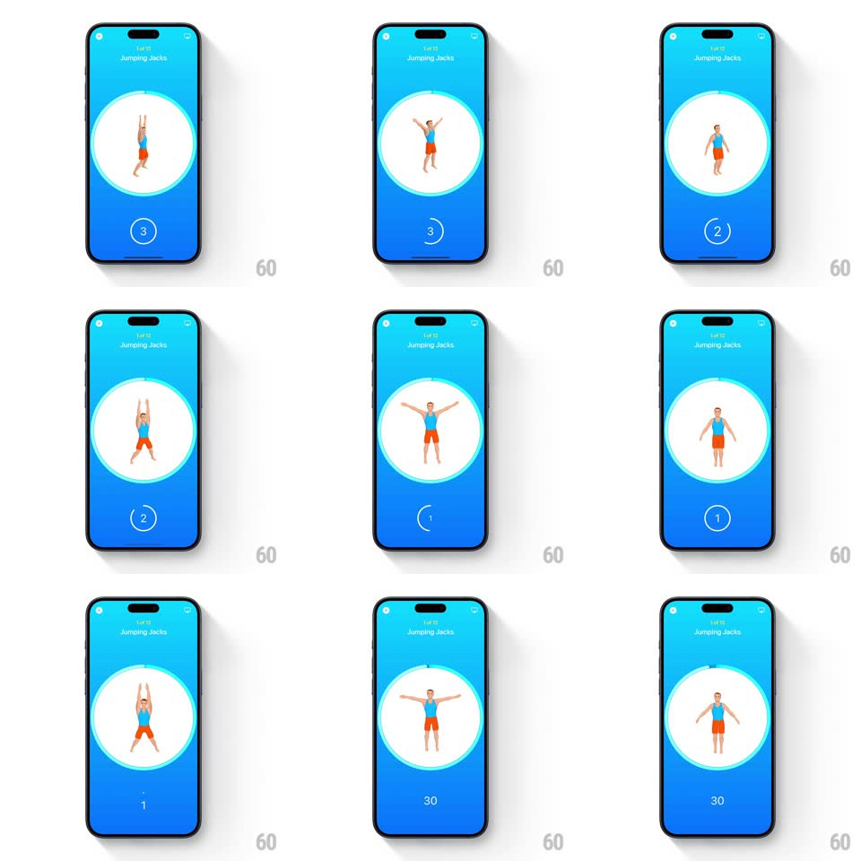

Media
Frame-by-frame

Rebuild this interaction 1:1: Seven's workout start countdown - a big 3-2-1 with pulsing numbers and a drawing circular ring inside a white exercise circle, handing off to the 30-second exercise timer.

Rebuild this interaction 1:1: Seven's workout start countdown - a big 3-2-1 with pulsing numbers and a drawing circular ring inside a white exercise circle, handing off to the 30-second exercise timer. ## Integration Integration: stack-agnostic spec - springs given as stiffness/damping, timed motions as duration + curve; map every value to your framework and animation library of choice. ## Scene Blue screen: "1 of 12 / Jumping Jacks" header, a large white circle containing an animated figure demoing the move, the countdown number centered below the circle, corner icons (back, sound) top. ## Motion spec Pattern: pulsing countdown with drawing ring. - Each count (3, 2, 1) scales in from 1.4 -> 1 with a spring (~380/18) and fades slightly as it lands; a circular ring around the number draws a full revolution per second (linear, 1s), resetting with each count. - The exercise figure inside the white circle loops its rep animation continuously through the countdown - the prep preview never freezes. - After "1": the number crossfades to "30" (the work interval), the ring restarts as the interval progress ring, and the header's exercise name holds. - The white circle breathes gently (scale 1 <-> 1.015, 2s) throughout. ## Calibration - Exactly 1s per count; the ring sweep is the second-hand. - Numbers are large and white; the ring is a thin white stroke at ~70% opacity. ## Reduced motion Numbers crossfade; ring hidden, replaced by a static label. ## Don't miss - The countdown and the demo figure are independent loops - cutting the figure during the countdown would kill the preview's purpose. - The transition from countdown to work timer is instant (no interstitial).